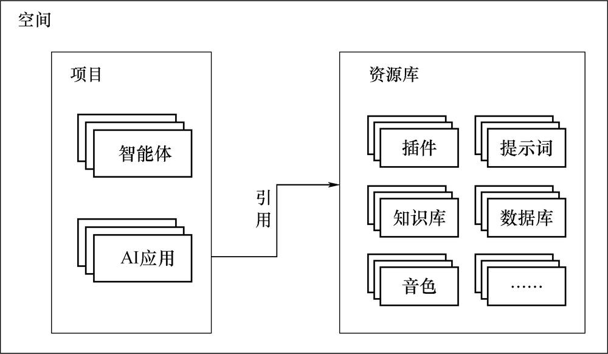
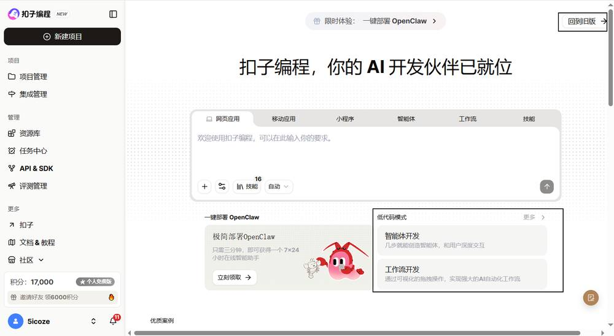
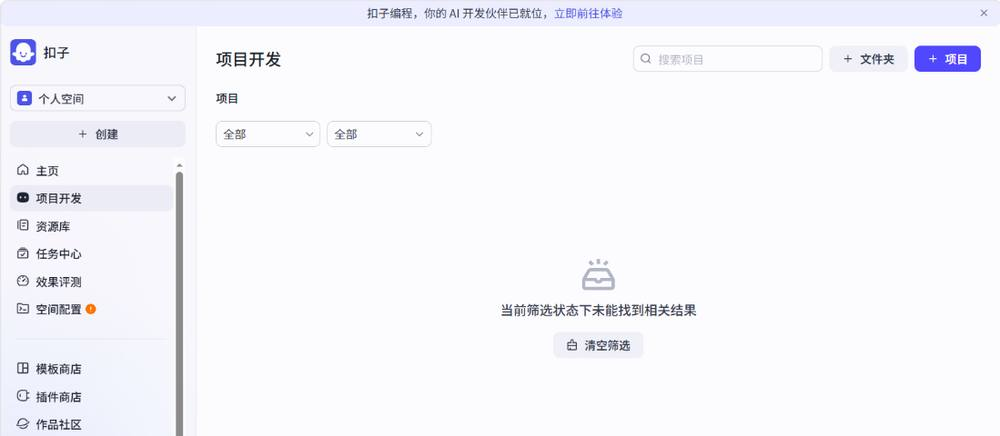
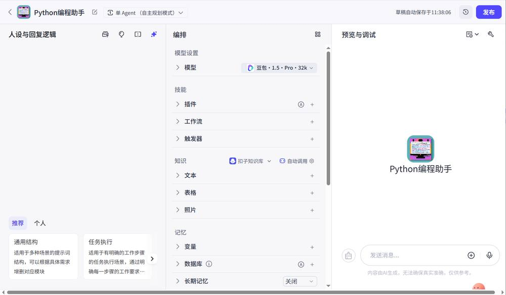
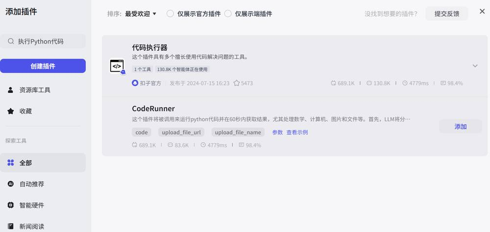
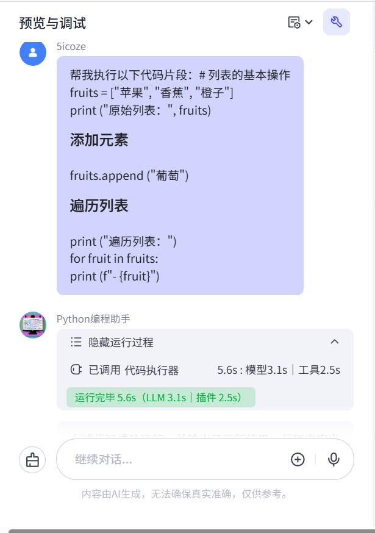
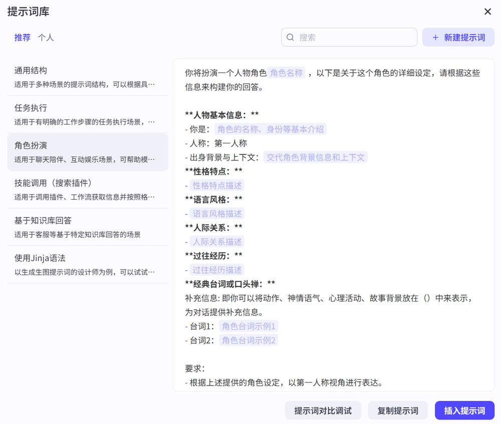

第 1 页 · 项目1
项目1
智能体开发快速入门
工信精品人工智能系列教材
《智能体项目开发实战（扣子）（微课版）》
第 2 页 · 目录
目录
01
认识智能体
02
扣子编程低代码开发环境
03
智能体的开发流程
04
编写并优化提示词
05
为智能体设置模型
06
提升智能体对话体验
07
课后实践
项目 1 智能体开发快速入门
第 3 页 · 学习目标
学习目标
知识目标
● 认识智能体
● 了解扣子编程平台架构
● 了解智能体的开发流程
能力目标
● 熟悉扣子编程低代码开发环境
● 能够开发简单智能体
● 熟悉智能体从创建到发布的全流程
素养目标
● 培养AI伦理意识
● 探索AI应用价值
● 培养项目开发规范意识
项目 1 智能体开发快速入门
第 4 页 · 项目引入
项目引入
开启智能体入门之旅
从生成式AI到智能体AI
智能体正推动AI从"生成式AI"迈向"智能体AI"的新阶段。这一转变标志着AI从擅长生成内容的"被动工具"，进化成能够主动理解、规划并执行复杂任务的"数字行动者"，从而成为发展新质生产力的重要引擎。
扣子编程平台
新一代一站式AI项目开发平台，提供零代码/低代码开发模式，让开发者通过可视化界面快速搭建基于大模型的各类AI项目。
发布与集成
开发完成后可一键发布至豆包、飞书、微信等社交平台，也可通过API或SDK将AI应用集成到现有业务系统中。
学习路径
低代码项目分为智能体和AI应用两类，初学者应从智能体开始。本项目将引领读者熟悉智能体从创建到发布的全流程。
本项目将引领读者开启智能体入门之旅，让读者熟悉智能体从创建到发布的全流程
项目 1 智能体开发快速入门
第 5 页 · 1.1
1.1
认识智能体
从生成式AI到智能体AI，理解智能体的核心概念、工作机制与开发平台
第 6 页 · 1.1.1
1.1.1
为什么需要智能体
大模型的局限
大模型是强大的"大脑"，但缺乏主动感知和执行能力。需要人类提问来驱动，无法自主操作。
智能体的突破
为大模型装上"眼睛""耳朵"和"双手"，实现从"能想"到"能干"的跨越。
智能体的部分应用
| 应用领域 | 典型场景 | 案例 |
| 个人生活与服务 | 智能座舱、个性化导览、内容创作 | 出行顾问、AI英语外教、视频生成 |
| 行业赋能与专业化服务 | 医疗健康、法律服务 | AI医生分身、法律咨询智能体 |
| 工业生产与运维 | 设备管理、流程优化 | 工厂设备管理智能体、工艺优化智能体 |
项目 1 智能体开发快速入门
04
第 7 页 · 1.1.2
1.1.2
什么是智能体
智能体是能感知环境、理解目标、规划行动并执行任务的智能实体。以大模型为基础，具备四大核心能力：
自主决策与规划
工具调用与行动
多模态交互与适应
记忆与持续学习
从"生成式AI"升级到"智能体AI"，成为发展新质生产力的重要引擎
项目 1 智能体开发快速入门
05
第 8 页 · 1.1.3
1.1.3
智能体是如何工作的
"感知—决策—行动"循环 + 四大核心组件
感知
接收环境信息
决策
大模型制定决策
行动
调用工具执行
评估结果→循环
四大核心组件
感知组件
耳朵和眼睛
决策组件
大脑
动作组件
双手
记忆组件
笔记本
关键特性：智能体并非执行一次流程，而是处在动态循环中。行动后评估结果，若未达成目标，会将观察结果重新输入感知组件并制定新决策，从而具备处理复杂动态任务的能力。
项目 1 智能体开发快速入门
06
大模型是智能体的"根基"，智能体则为大模型装上"肢体"，使其成为能感知、行动的智能实体
第 9 页 · 1.1.4
1.1.4
国内主要智能体开发平台
| 开发平台 | 厂商 | 核心定位 | 技术特色 | 适用场景 |
| 扣子编程 | 字节跳动 | 零代码AI开发平台 | 拖曳式工作流，内置插件，一键发布 | 个人开发者、内容创作者 |
| Dify | Dify | 开源低代码开发平台 | 支持多种模型，可视化编排，私有化部署 | 企业级应用、技术团队 |
| 腾讯元器 | 腾讯 | 深度集成腾讯社交生态 | 集成微信、QQ，支持3D虚拟形象 | 社交与教育场景 |
| 瓴羊AgentOne | 阿里巴巴 | 企业级智能体服务平台 | 与阿里云联动，场景化解决方案 | 营销、客服、分析 |
| 智谱清流 | 智谱AI | 企业级全链路开发平台 | 依托GLM-4模型，零代码开发 | 企业级应用场景 |
| 星辰Agent | 科大讯飞 | 企业级应用落地 | 与RPA深度融合，工具集成能力强 | 轻办公、文旅、数字员工 |
初学者首选：扣子编程具有低门槛特点和丰富生态，特别适合初学者、个人开发者或希望快速搭建AI项目的用户。
项目 1 智能体开发快速入门
08
第 10 页 · 1.1.5
1.1.5
扣子编程平台概述
扣子编程是什么
新一代一站式云端Vibe Coding开发平台
通过自然语言描述即可构建智能体、工作流、应用
低代码开发模式
面向个人开发者、企业及AI爱好者
核心价值：开发过程标准化、模块化，像工厂组装产品一样高效
扣子 2.0 两大开发模式
AI编程模式 — 自然语言描述，AI自动生成代码
低代码开发模式 — 可视化配置，本书重点
本书重点讲解低代码开发模式，读者熟悉后可无缝过渡到Coze Studio进行企业级开发
项目 1 智能体开发快速入门
09
极低开发门槛
强大功能集成与扩展
多模态智能交互
跨平台无缝部署
全链路生态支持
企业级安全与扩展
开源版本 Coze Studio：支持私有化部署，满足企业对数据安全、高并发和定制化的需求。适合专业开发者进行深度定制和二次开发。
扣子编程低代码开发的优势
第 11 页 · 1.2
1.2
扣子编程低代码开发环境
熟悉扣子编程低代码开发界面与功能模块
第 12 页 · 1.2.1
1.2.1
智能体与AI应用
智能体（低代码智能体）
交互方式：语言用户界面（LUI）
核心特点：
通过对话方式接收用户输入
借助大模型自动调用插件或工作流
执行业务流程并生成回复
典型场景：智能客服、虚拟伴侣、个人助理
AI应用（低代码应用）
交互方式：图形用户界面（GUI）
核心特点：
具备完整的业务逻辑和可视化界面
用户通过GUI交互操作
可满足复杂交互功能需求
典型场景：AI搜索、翻译工具、数据分析
提示：扣子2.0将低代码模式的智能体和AI应用分别称为低代码智能体和低代码应用，以区别于扣子AI编程生成的智能体和应用。
项目 1 智能体开发快速入门
12
第 13 页 · 1.2.2
1.2.2
扣子编程的平台架构
空间（顶层资源组织，实现资源隔离）
空间是组织资源的基础单元，不同空间内的资源和数据相互隔离。一个空间内可创建若干个项目和资源库。
资源库分为两个层级：空间级资源可被所有项目使用；项目级资源默认仅该项目使用。
项目 1 智能体开发快速入门
13

第 14 页 · 1.2.3
1.2.3
注册与登录扣子编程
登录方式
手机号登录
账号密码登录
第三方平台登录（抖音、飞书等）
新用户需先注册账号
订阅套餐
个人免费版（默认，适合个人开发者）
个人进阶版 / 高阶版 / 旗舰版
企业版
进阶版提供更多资源
个人空间：每个用户有且只有一个个人空间，不能邀请他人加入。个人版用户只能使用个人空间，所有操作均位于个人空间内。
项目 1 智能体开发快速入门
14
第 15 页 · 同步训练1-1
同步训练1-1
熟悉扣子编程低代码开发界面与功能模块
主页
左侧导航栏，右侧动态推荐和关注列表
操作提示：登录扣子编程后，单击"回到旧版"进入低代码开发页面。通过左上角的工作空间下拉菜单切换空间。个人版用户只能使用个人空间。
项目 1 智能体开发快速入门
15

第 16 页 · 同步训练1-1
同步训练1-1
熟悉扣子编程低代码开发界面与功能模块
项目开发
项目列表管理，创建副本、迁移、删除
项目 1 智能体开发快速入门
15

第 17 页 · 同步训练1-1
同步训练1-1
熟悉扣子编程低代码开发界面与功能模块
模板商店
各种场景模板，复制并自定义，加速开发
项目 1 智能体开发快速入门
15
第 18 页 · 同步训练1-1
同步训练1-1
熟悉扣子编程低代码开发界面与功能模块
作品社区
公共展示、交流与分发平台
项目 1 智能体开发快速入门
15
第 19 页 · 1.3
1.3
智能体的开发流程
掌握智能体从创建到发布的完整开发流程
第 20 页 · 1.3
1.3
智能体基本开发流程
Step 1
创建智能体
Step 2
编写提示词
Step 3
添加技能
Step 4
测试调试
Step 5
发布
各步骤说明
① 创建智能体 — 输入名称、功能介绍，选择工作空间
② 编写提示词 — 定义角色、任务逻辑与输出规则
③ 添加技能 — 通过插件扩展智能体能力边界
④ 测试与调试 — 在预览面板验证智能体行为
⑤ 发布与部署 — 发布到多个平台供用户使用
开发流程遵循模块化设计理念，通过可视化操作降低开发门槛。接下来通过案例实战演示完整流程。
项目 1 智能体开发快速入门
17
第 21 页 · 案例实战1-1
案例实战1-1
从零开始开发一个智能体
Step 1 创建智能体 — Python编程助手
1
登录扣子编程，单击"回到旧版"按钮
2
单击"创建"按钮，选择"创建智能体"
3
输入智能体名称和功能介绍
4
选择工作空间（通常选择"个人空间"），生成头像图标
5
单击"确认"，进入智能体编辑页面
项目 1 智能体开发快速入门
18
第 22 页 · 案例实战1-1
案例实战1-1
从零开始开发一个智能体
智能体编辑页面（三栏式布局）
左侧面板
人设与回复逻辑
设置角色与回复逻辑
中间面板
编排
添加插件、技能等扩展能力
右侧面板
预览与调试
实时预览与调试智能体
项目 1 智能体开发快速入门
18

第 23 页 · 案例实战1-1
案例实战1-1
从零开始开发一个智能体
Step 2 编写提示词——设置角色与回复逻辑
提示词示例
# 角色
你是AI教育助手，专注解答Python编程和算法问题。
## 技能
### 技能1：代码问题解答
- 判断类型，分步骤解释原理，给出代码示例
### 技能2：学习路径建议
- 根据用户水平推荐学习资源
## 限制
- 不回答与编程无关的问题
编写要点
指定智能体的角色、技能和流程
给出约束条件，让对话符合预期
角色会持续影响所有对话的回复效果
AI优化功能
单击"优化"按钮 → 选择"自动优化" → AI润色提示词为结构化内容 → 单击"替换"应用优化结果
项目 1 智能体开发快速入门
19
第 24 页 · 案例实战1-1
案例实战1-1
从零开始开发一个智能体
Step 3 添加技能
代码执行器（CodeRunner）
搜索"执行Python代码" → 展开工具列表 → 单击"添加"
Web Search API
搜索"WebSearch" → 展开工具列表 → 单击"添加"
项目 1 智能体开发快速入门
20

第 25 页 · 案例实战1-1
案例实战1-1
从零开始开发一个智能体
Step 4 & 5 测试与发布
测试与调试
在预览面板对话测试
发布
选择平台，生成发布记录
管理
查看数据统计和分析
提示：扣子编程在配置智能体过程中具备自动保存功能。发布时若未提供开场白，系统会自动生成。已发布的智能体可在"空间管理"→"发布管理"中查看和下架。
项目 1 智能体开发快速入门
20

第 26 页 · 同步训练1-2
同步训练1-2
使用自然语言创建智能体
用自然语言描述需求，AI自动生成智能体配置。适合快速原型验证。
1
打开"创建智能体"对话框
2
切换到"AI创建"选项卡
3
输入功能描述
4
AI自动生成配置
5
确认创建
需求描述示例
创建一个充满正能量的夸夸智能体，当用户分享自己的特点或遇到的困难时，能挖掘优点并给予温暖鼓励。若用户情绪低落但未说明原因，应主动询问并提供支持。遇到专业问题需调用搜索引擎获取可靠答案。
项目 1 智能体开发快速入门
21
第 27 页 · 同步训练1-3
同步训练1-3
通过模板搭建智能体
从模板商店复制已有智能体进行改造，适合有参考需求的场景。
1
进入"模板商店"
2
浏览或搜索模板
3
测试模板效果
4
复制并设置名称
5
改造发布
关键操作说明
在模板分类下选择"学习教育"，找到"智能助教"模板
单击"复制"按钮，设置名称和工作空间
在编辑页面进行定制化改造后发布
项目 1 智能体开发快速入门
22
第 28 页 · 1.4
1.4
编写并优化提示词
掌握提示词的分类、编写方法与优化技巧
第 29 页 · 1.4.1
1.4.1
提示词的分类
| 对比项 | 系统提示词 | 用户提示词 |
| 定义 | 开发者为智能体设定的初始参数和行为准则 | 用户直接向智能体提出的具体指令或问题 |
| 编写者 | 开发者（创建者） | 用户（使用者） |
| 作用 | 设定角色和回复逻辑，持续影响对话响应模式 | 触发智能体的具体响应，执行特定任务 |
| 特点 | 相对稳定，强调全面性和指导性 | 动态变化，强调简洁明了 |
开发者编写系统提示词时，需要预想用户可能输入的内容（用户提示词），并制定相应的响应规则。系统提示词不直接包含用户提示词，而是定义处理用户提示词的规则。
项目 1 智能体开发快速入门
24
第 30 页 · 1.4.2
1.4.2
提示词的基本组成
| 组成部分 | 说明 | 示例 |
| 角色设定 | 描述智能体所扮演的角色、职责和回复风格 | # 角色 你是一个天气查询助手... |
| 功能和流程 | 描述功能和 workflow，约定不同场景下的回答方式 | ## 技能 当用户说出城市名称时... |
| 限制 | 限制回复范围，告知应该和不应该回答什么 | ## 限制 只回答天气相关问题... |
| 回复格式 | 提供回复格式示例，智能体会模仿该格式 | ## 回复格式 【城市】：[名称] ... |
编写原则：提示词编写得越清晰、明确，智能体的回复就越符合预期。不同类型的智能体提示词侧重点不同，但基本组成类似。
项目 1 智能体开发快速入门
25
第 31 页 · 1.4.2
1.4.2
提示词的编写方法
Markdown 语法要点
标题分级：# 一级标题，## 二级标题
列表：- 无序列表，1. 有序列表
代码块：``` 包裹代码
强调：**粗体**，*斜体*
分割线：--- 或 ***
引用：> 引用内容
Jinja 模板引擎
使用简单的标记语言将动态内容插入静态模板，更灵活高效地编写提示词。
快捷插入技能
在编辑框中输入 {} 可引用已添加的技能（插件、工作流、知识库等）
项目 1 智能体开发快速入门
26
第 32 页 · 1.4.3
1.4.3
提示词的优化
编写提示词
测试运行
分析结果
优化迭代
AI自动优化
输入优化要求，AI自动润色提示词为结构化内容
基于调试结果优化
输入与预期不符的地方，AI根据调试记录自动完成优化
持续迭代
发布后仍可修改提示词且立即生效，无须重新发布
建议：进行重要修改前进行备份。提示词可保存到资源库中，供工作空间内的其他成员引用。
项目 1 智能体开发快速入门
27
第 33 页 · 同步训练1-4
同步训练1-4
基于提示词模板编写并优化
1
打开"提示词库"对话框
2
选择模板（如"角色扮演"）
3
插入模板并按引导填写
4
调试智能体
5
AI优化提示词
6
替换优化结果
7
保存到资源库
操作要点
以"环球旅行定制专家"为例，选择"角色扮演"模板后，按模板中高亮文字引导填写具体内容。文字高亮和颜色是编辑辅助功能，保存后会自动消失。
项目 1 智能体开发快速入门
28

第 34 页 · 1.5
1.5
为智能体设置模型
理解模型选择与参数设置对智能体性能的影响
第 35 页 · 1.5.1
1.5.1
模型的选择
模型是智能体的"天生资质"，决定能力上限。编写优秀的提示词是在此基础上的"后天培养"。
选择原则
长文生成 → 支持长文本的模型
调用插件 → 支持函数调用的模型
识别视频 → 多模态大模型
复杂推理 → 深度思考模型
支持模型
豆包系列（个人免费版可用）
通义千问
DeepSeek系列
企业版还可使用火山方舟更多模型
模型对比调试：可切换不同模型，测评同一智能体在不同模型中的效果，根据评估结果选择最合适的模型。模型版本迭代快（3~6个月），应尽可能选择较新版本。
项目 1 智能体开发快速入门
30
第 36 页 · 1.5.2
1.5.2
模型参数的设置
| 参数类别 | 说明 | 主要配置项 |
| 生成多样性 | 调整生成内容的随机性 | 生成随机性（Temperature）：控制结果随机程度 |
| 输入及输出 | 指定输入输出格式 | 携带上下文轮数、最大回复长度（Token数） |
| 上下文缓存 | 前缀缓存开关 | 适用于重复使用相同系统提示词的场景 |
| 模型默认指令 | 自动拼接执行指令 | 当前时间、SP防泄露指令 |
| 深度思考 | 控制推理深度 | 深度思考开关、深度思考程度（低/中/高） |
不同模型支持调整的参数不尽相同。提供3种预置模式：精确模式、平衡模式（默认）、创意模式，可根据场景快速切换。
项目 1 智能体开发快速入门
31
第 37 页 · 同步训练1-5
同步训练1-5
选择并设置模型
1
查看当前模型配置
2
选择新模型（如 DeepSeek-V3.2）
3
模型对比调试
4
选择最优模型
5
展开参数设置面板
6
调整参数
注意：模型版本迭代较快（生命周期3~6个月），开发项目时应尽可能选择较新版本。如果模型因下线导致智能体不能正常运行，需要开发者手动切换到新版本模型。
项目 1 智能体开发快速入门
32
第 38 页 · 1.6
1.6
提升智能体对话体验
通过开场白和快捷指令提升用户对话体验
第 39 页 · 1.6.1
1.6.1
设置开场白
开场白帮助用户快速理解智能体用途，引导用户正确使用。分为两类：
开场白文案
使用智能体时自动展示的引导信息
帮助用户快速理解智能体用途
支持 Markdown 格式
支持变量，如 {{user_name}}
可使用AI自动生成
开场白预置问题
提供推荐问题供用户快速体验
用户单击即可发起对话
设置多个时随机显示3个
降低用户使用门槛
展示智能体核心能力
项目 1 智能体开发快速入门
34
第 40 页 · 同步训练1-6
同步训练1-6
开场白设置示范
以 Python编程助手 为例
开场白文案示例
"{{user_name}}你好！我是你的AI编程助手，可以解答Python编程和算法等问题。"
其中 {{user_name}} 会自动引用扣子用户的昵称
预置问题示例（4个）
请给出零基础学习Python的3个月计划表
对于初学者，如何避免Python编程中的语法错误？
Python变量作用域如何指定？
如何导入模块？
操作步骤：① 在"编排"面板的"对话体验"区域展开"开场白" → ② 输入开场白文案 → ③ 添加预置问题 → ④ 在预览面板删除对话记录，测试开场白效果
项目 1 智能体开发快速入门
35
第 41 页 · 1.6.2
1.6.2
配置快捷指令
快捷指令让用户通过单击按钮即可触发预设功能，提升交互效率。分为两种类型：
类型 A
简单指令
用户直接单击即可执行
设置指令名称和图标
编写触发后执行的提示词
可设置是否显示在对话界面
类型 B
组件指令
使用交互组件收集用户输入后再执行：
选择器：下拉菜单选择选项
文本输入：用户输入文本内容
文件上传：上传图片或文档
项目 1 智能体开发快速入门
36
第 42 页 · 同步训练1-7
同步训练1-7
快捷指令配置示范
以 Python编程助手 为例，创建"库文档速查"组件指令
1
进入快捷指令面板
2
创建指令，设置名称
3
添加文本组件
4
编写指令内容
5
关联组件并测试
"库文档速查"指令配置
按钮名称：库文档速查 指令名称：library
指令描述：查询Python库的安装命令与核心API用法
组件：添加"库名"文本组件，在指令内容中关联该组件
项目 1 智能体开发快速入门
37
第 43 页 · 1.7
1.7
课后实践
巩固所学知识，动手实践智能体开发
第 44 页 · 1.7
1.7
课后实践任务
1
注册扣子账号
熟悉扣子编程低代码开发环境
2
开发知识问答智能体
从零开始，熟悉基本开发流程
3
设置开场白和快捷指令
提升用户对话体验
4
基于模板创建智能体
使用"智能搜索"模板进行改造
动手实践是掌握智能体开发的最佳方式！
项目 1 智能体开发快速入门
39
第 45 页 · 项目 1 总结
项目 1 总结
智能体开发快速入门
认识智能体
熟悉开发环境
掌握开发流程
编写优化提示词
设置与优化
《智能体项目开发实战（扣子）（微课版）》
人民邮电出版社